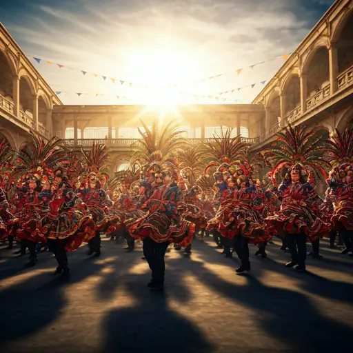

01
Fiestas Patrias · Temporada 2026
Arriendo de trajes de Tobas para colegios en Renca
Vestuario folclórico
de alta calidad
en Renca
Traje íntegro, higienización profesional y reserva con contrato formal. Acompañamos a colegios de Renca en su presentación de Fiestas Patrias.

Cobertura
en Renca
Las comunidades escolares de Renca organizan hermosos eventos de Fiestas Patrias donde la danza de los Tobas se ha vuelto muy popular. Con nuestro sistema de arriendo por curso, aseguramos uniformidad de colores y tallas para todos los estudiantes, simplificando la tarea del profesor de folclor.
El taller central está en Santa Bárbara 4049, Recoleta, con retiro y devolución en una sola visita, en una ventana de 6 horas.
Colegios
en la zona
01
Acompañamos a establecimientos de Renca
Entre los colegios que confían en nosotros: Colegio Bicentenario Cumbres de Renca, Colegio Santo Tomás Renca y Escuela Lo Velásquez, además de otros recintos de la zona norte, sur y poniente de Santiago.
02
Tarifa por volumen
El arriendo por curso completo (de 5 a 45 trajes) mantiene la misma tarifa unitaria de $35.000 por traje, más garantía reembolsable de $10.000 por traje.
03
¿Tu colegio no aparece en la lista?
Atendemos a cualquier institución de Renca con el mismo estándar. Escríbenos por WhatsApp y cotizamos sin compromiso.
Cómo
funciona
02
03
Lo que incluye
nuestro servicio
01
Traje íntegro
Pechera, falda o faldón, faja, brazaletes, perneras y penacho de plumas decorado. Pieza por pieza, sin faltantes.
02
Higienización profesional
Lavado profesional entre cada arriendo. Las plumas y los accesorios pasan por sanitización antes de la entrega.
03
Reserva con contrato
El compromiso firmado respalda legalmente al curso. Los trajes quedan reservados por color y código.
04
Devolución transparente
La garantía de $10.000 por traje se devuelve íntegra vía transferencia tras revisar el inventario físico.
Preguntas frecuentes
en Renca
Dudas habituales sobre logística, precios y cobertura local.
Si soy de Renca, ¿tengo que retirar en Recoleta? +
Sí. El taller y la bodega central están en Santa Bárbara 4049, Recoleta. Concentrar las entregas allí nos permite asegurar que cada traje llegue limpio, completo y revisado, manteniendo la tarifa más conveniente de la temporada.
¿Cuánto cuesta el arriendo y la garantía? +
El arriendo de Tobas tiene un valor de $35.000 por traje. Adicionalmente, se solicita una garantía reembolsable de $10.000 por traje, que se devuelve íntegra tras la revisión de inventario en la devolución.
¿Qué colegios de Renca ya trabajan con ustedes? +
Acompañamos a establecimientos de Renca como Colegio Bicentenario Cumbres de Renca, Colegio Santo Tomás Renca y Escuela Lo Velásquez, entre otros recintos de la zona norte, sur y poniente de Santiago.
Asegura los trajes
para tu curso en Renca
Septiembre se llena rápido. Reserva con el 50% del arriendo y la garantía para congelar color y tallas de tu curso.
Hablar con Loreto por WhatsAppRespuesta en menos de 10 minutos · Lunes a Sábado de 09:00 a 19:00 hrs
Reserva directa
en Renca
Completa los datos y respondemos por WhatsApp con disponibilidad, colores y los pasos para reservar. Sin compromiso hasta firmar el compromiso de arriendo.
Logistica para tu visita
Santa Barbara 4049
Recoleta, Santiago
Lun a Sab
09:00 a 19:00 hrs
Responde por WhatsApp
Antes de venir, cotiza primero